vignettes/puente-ajovin.Rmd
puente-ajovin.Rmd
# Load additional packages/functions etc and prepare workspace
library(reshape2)
library(tidyverse)
library(knitr)
library(ggplot2)This vignette reproduces the empirical findings in Puente-Ajovín and Sanso-Navarro (2015). The entire routine has been coded up by myself in R from scratch, and any errors are my own.
There are discrepancies between the summary statistics presented in the published version of the paper and the results presented here. However, these results align with those in the original working paper. Consequently, the results obtained in this reproduction exercise should be compared with those in the original working paper.
Puente-Ajovín and Sanso-Navarro (2015) use data from Cecchetti, Mohanty, and Zampolli (2011) (available here), which is part of the PPSBTGC paper.
# First, load the package.
library(PSBTGC)
#> Loading required package: comtradr
#> Loading required package: rlang
#>
#> Attaching package: 'rlang'
#> The following objects are masked from 'package:purrr':
#>
#> %@%, as_function, flatten, flatten_chr, flatten_dbl, flatten_int,
#> flatten_lgl, flatten_raw, invoke, splice
#> Loading required package: tcltk
summary(Cecchetti)
#> year country gr td
#> Length:540 Length:540 Min. :-8.4524 Min. :0.000
#> Class :character Class :character 1st Qu.: 0.6639 1st Qu.:1.732
#> Mode :character Mode :character Median : 1.9953 Median :2.233
#> Mean : 1.7293 Mean :2.213
#> 3rd Qu.: 3.1688 3rd Qu.:2.751
#> Max. : 8.7481 Max. :4.557
#>
#> gd pd cd hd
#> Min. :0.1625 Min. :0.000 Min. :0.2858 Min. :0.05791
#> 1st Qu.:0.5312 1st Qu.:1.164 1st Qu.:0.7187 1st Qu.:0.40726
#> Median :0.6763 Median :1.487 Median :0.9749 Median :0.53181
#> Mean :0.7425 Mean :1.504 Mean :1.0215 Mean :0.56340
#> 3rd Qu.:0.9001 3rd Qu.:1.869 3rd Qu.:1.2131 3rd Qu.:0.71563
#> Max. :2.1260 Max. :2.995 Max. :2.1691 Max. :1.52889
#> NA's :29Below I reproduce some of the summary statistics of two debt measures in Table 1 and one debt measure in Table 2 of the working paper.
# Summary statistics by decade
sum.dat <- Cecchetti
sum.dat$decade <- ifelse(sum.dat$year < 1990, "1980s",
ifelse(sum.dat$year >= 2000, "2000s", "1990s")
)
sum.dat <- sum.dat %>%
group_by(country, decade) %>%
summarise(
"GDP Growth" = mean(gr),
"Government Debt" = mean(gd) * 100,
"Private Debt" = mean(pd) * 100
)
# Table output as in paper
kable(reshape2::dcast(sum.dat[, c(1, 2, 3)], country ~ decade),
digits = 2,
caption = 'Table below corresponds to Table 1, column "Growth": Average real GDP growth rates.'
)| country | 1980s | 1990s | 2000s |
|---|---|---|---|
| AT | 1.97 | 1.94 | 1.39 |
| AU | 2.02 | 2.31 | 2.29 |
| BE | 1.99 | 1.86 | 1.31 |
| CA | 1.74 | 1.41 | 1.24 |
| DE | 1.71 | 1.81 | 0.81 |
| DK | 1.89 | 2.10 | 0.63 |
| ES | 2.37 | 2.56 | 1.13 |
| FI | 3.27 | 0.94 | 1.83 |
| FR | 1.82 | 1.29 | 0.87 |
| GB | 2.29 | 1.87 | 1.37 |
| GR | 0.28 | 1.40 | 2.86 |
| IT | 2.55 | 1.34 | -0.05 |
| JP | 3.06 | 1.09 | 0.42 |
| NL | 1.41 | 2.53 | 1.06 |
| NO | 2.47 | 3.28 | 1.34 |
| PT | 3.15 | 2.90 | 0.67 |
| SE | 1.86 | 1.08 | 1.83 |
| US | 2.12 | 1.97 | 0.77 |
kable(reshape2::dcast(sum.dat[, c(1, 2, 4)], country ~ decade),
digits = 2,
caption = 'Table below corresponds to Table 1, column "Government": Average percentage of total government debt over GDP.'
)| country | 1980s | 1990s | 2000s |
|---|---|---|---|
| AT | 48.44 | 66.87 | 76.66 |
| AU | 42.74 | 53.00 | 32.24 |
| BE | 102.81 | 139.12 | 111.41 |
| CA | 91.71 | 131.61 | 105.31 |
| DE | 39.12 | 51.69 | 67.53 |
| DK | 72.28 | 85.92 | 63.01 |
| ES | 41.65 | 67.43 | 60.22 |
| FI | 24.11 | 74.87 | 55.44 |
| FR | 40.97 | 64.58 | 80.98 |
| GB | 57.31 | 53.53 | 55.50 |
| GR | 47.04 | 104.27 | 128.67 |
| IT | 73.18 | 117.43 | 120.08 |
| JP | 69.67 | 91.01 | 177.53 |
| NL | 87.00 | 90.93 | 65.81 |
| NO | 46.72 | 49.81 | 60.05 |
| PT | 57.11 | 66.29 | 79.59 |
| SE | 72.43 | 85.65 | 62.60 |
| US | 58.77 | 73.23 | 66.47 |
kable(reshape2::dcast(sum.dat[, c(1, 2, 5)], country ~ decade),
digits = 2,
caption = 'Table below corresponds to Table 2, column "Private": Average percentage of total private non-financial debt over total GDP.'
)| country | 1980s | 1990s | 2000s |
|---|---|---|---|
| AT | 121.10 | 112.63 | 138.51 |
| AU | 103.89 | 127.14 | 173.61 |
| BE | 106.32 | 138.28 | 201.48 |
| CA | 161.21 | 180.62 | 182.36 |
| DE | 104.84 | 129.45 | 163.96 |
| DK | 0.00 | 100.47 | 221.02 |
| ES | 138.96 | 139.57 | 238.48 |
| FI | 136.52 | 153.34 | 172.54 |
| FR | 131.86 | 155.27 | 190.77 |
| GB | 124.04 | 155.62 | 208.44 |
| GR | 67.41 | 51.44 | 97.61 |
| IT | 69.94 | 107.16 | 152.29 |
| JP | 259.69 | 287.09 | 245.97 |
| NL | 145.53 | 179.97 | 236.46 |
| NO | 0.00 | 99.09 | 227.36 |
| PT | 100.80 | 111.70 | 219.56 |
| SE | 178.58 | 216.49 | 249.42 |
| US | 115.59 | 126.57 | 161.31 |
I combine Figure 1 and Figure 2 of the working paper for better comparability below.
# Figure 1 and 2 combined
reshape2::melt(sum.dat, id = c("country", "decade")) %>%
ggplot(aes(x = decade, y = value, colour = variable, group = country)) +
geom_point() +
geom_line() +
facet_grid(variable ~ country, scales = "free") +
labs(x = "", y = "") +
theme_minimal() +
theme(legend.position = "none", axis.text.x = element_text(angle = 45, vjust = 0.5)) +
ggtitle("Real GDP growth rates vs. average government and non-financial private debt-to-GDP ratios.")
For the statistical analysis, I first add up to the 4\(^{th}\) lag of each respective debt measure
to the data using the function lag.series.
# Generate data set for analysis
ana.dat <- plyr::ddply(Cecchetti, "country", transform,
l1gr = lag.series(gr, l = 1),
l2gr = lag.series(gr, l = 2),
l3gr = lag.series(gr, l = 3),
l4gr = lag.series(gr, l = 4),
l1td = lag.series(td, l = 1),
l2td = lag.series(td, l = 2),
l3td = lag.series(td, l = 3),
l4td = lag.series(td, l = 4),
l1gd = lag.series(gd, l = 1),
l2gd = lag.series(gd, l = 2),
l3gd = lag.series(gd, l = 3),
l4gd = lag.series(gd, l = 4),
l1cd = lag.series(cd, l = 1),
l2cd = lag.series(cd, l = 2),
l3cd = lag.series(cd, l = 3),
l4cd = lag.series(cd, l = 4),
l1pd = lag.series(pd, l = 1),
l2pd = lag.series(pd, l = 2),
l3pd = lag.series(pd, l = 3),
l4pd = lag.series(pd, l = 4)
)To test for cross-sectional dependence of government debt, Puente-Ajovín and Sanso-Navarro (2015) first estimate
\[ GR_{i,t} = \alpha_i + \beta_{i,1} GR_{t-1} + \beta_{i,2} GD_{t-1} + \epsilon_{i,t} \]
for \(i = 1,2,...,N\) and \(t= 1,2,...T\) where \(\alpha_i\) and \(\beta_i\) are country-specific intercept and slope coefficients, respectively. To test for cross-sectional dependence of any of the other debt measures, the second explanatory variable in the above regression has to be changed accordingly.
The null hypothesis of the Lagrange multiplier (LM) test by Breusch and Pagan (1980) tests for non-existence of cross-sectional dependence by \(H_0: \mathbb{Cov}(\epsilon_{i,t}, \epsilon_{j,t}) = 0\) for all \(t\) and \(i \neq j\). The test statistic is given by
\[ LM = T \left( \sum_{i = 1}^{N-1} \sum_{j = i+1}^{N} \hat{\rho}^2_{i,j} \right) \] and follows a chi-squared distribution with \(N(N-1)/2\) degrees of freedom under the null.
The second test implemented here is the CD test by Pesaran (2004), which asymptotically follows a standard normal distribution. The test statistic is given by
\[ CD = \left(\frac{2T}{N(N-1)} \right) \left(\sum_{i = 1}^{N-1} \sum_{j = i+1}^{N} \hat{\rho}_{i,j} \right). \]
Function PGranger.xsDependence performs both these tests
for cross-sectional. Their validity can be compared with two routines
available in STATA by running xtreg gr l1gr l1gd, fe and
xtcsd, pesaran abs. This test is equivalent to the CD test
reported below. We get a test statistic of 32.043. Alternatively,
xtcsi gr l1gr l1gd reports test statistics of 1117 and
30.4 for the LM and CD tests, respectively, which seem in line with the
results reported below in column Government*.
The third test of the paper, which follows Pesaran, Ullah, and Yamagata (2008) and constitutes a bias-adjusted modification of the LM test, is not implemented at the moment.
# Call PGranger.xsDependence for all four debt measures individually
shl <- numeric()
for (j in c("l1td", "l1gd", "l1pd", "l1cd")) {
out <- PGranger.xsDependence(
dat = ana.dat,
dep.var = "gr",
indep.var = c("l1gr", paste0(j)),
id.var = "country", time.var = "year"
)
shl <- rbind(shl, out)
}
# Table output
kable(t(shl),
digits = 2, col.names = c("Total", "", "Government", "", "Private", "", "Consumer", ""),
caption = "Table 3, top panel: Cross-sectional dependence and slope homogeneity tests."
)| Total | Government | Private | Consumer | |||||
|---|---|---|---|---|---|---|---|---|
| Test | LM | CD | LM | CD | LM | CD | LM | CD |
| Test.Stat | 1172.21371 | 31.40885 | 1107.17842 | 30.35645 | 1087.54216 | 29.96850 | 1031.78181 | 28.92961 |
| Sig | *** | *** | *** | *** | *** | *** | *** | *** |
Puente-Ajovín and Sanso-Navarro (2015) furthermore conduct a set of tests to identify country-specific heterogeneities. This part is skipped for the sake of brevity of this reproduction study.
The GDP growth rate of country \(i\) at \(t\), \(GR_{i,t}\), is said to be Granger caused by country \(i\)’s (sovereign) debt measure \(D_{i,t}\) if past realisations of \(D_{t,i}\) help in the prediction of \(GR_{i,t}\):
\[ GR_{i,t} = \alpha_{i,1} + \sum_{\ell=1}^p \beta_{i,1,\ell} GR_{t- \ell} + \sum_{ \ell=1}^{p} \delta_{i,1,\ell} D_{t-\ell} + \epsilon_{i,1,t} \\ D_{i,t} = \alpha_{i,2} + \sum_{\ell=1}^{p} \beta_{i,2,\ell} GR_{t-\ell} + \sum_{\ell=1}^p \delta_{i,2,\ell} D_{t-\ell} + \epsilon_{i,2,t} \] with \(p\), the lag length, selected by AIC/BIC.
A test of past debt-to-GDP ratios on GDP growth is a simple test of
non-Granger causality formulated as \[
H_0:\delta_{i,1,\ell} = 0 ~ \forall~ \ell=1,...,p.
\]
Estimating the above system estimation-by-estimation for \(i=1,...,N\) is not efficient under
contemporaneous cross-equation error correlation. Zellner (1962) proposes the seemingly unrelated
regression (SUR) system approach in this scenario instead. The
application of this estimator using macro panel data to test for Granger
causality was first introduced by Konya
(2006).
Rewriting the first equation of the above system in matrix notation for the i\(^{th}\) panel member: \[ \textbf{GR}_{\textbf{i}_{[T\times1]}} = \alpha_{1,i} \iota_{_{[T\times1]}} + \textbf{GR}_{1,\textbf{i}_{[T\times p]}}^\ell \textbf{b}_{1,\textbf{i}_{[p\times 1]}} + \textbf{D}_{1,\textbf{i}_{[T\times p]}}^\ell \textbf{d}_{1,\textbf{i}_{[p\times 1]}} + \textbf{e}_{1,\textbf{i}_{[T\times 1]}} \]
Stacking all \(i = 1,...,N\) cross-sectional units: \[ \textbf{GR}_{_{[NT\times1]}} = \textbf{a}_{1_{[NT\times1]}} + \textbf{GR}_{_{[NT\times Np]}}^\ell \textbf{b}_{1_{[Np\times1]}} + \textbf{D}_{_{[NT\times Np]}}^\ell \textbf{d}_{1_{[Np\times1]}} + \textbf{e}_{1_{[Np\times1]}} \]
where \[ \textbf{GR} = \begin{bmatrix} \textbf{GR}_1 \\ \textbf{GR}_2 \\ \vdots \\ \textbf{GR}_N \end{bmatrix} , \textbf{a}_i = \begin{bmatrix} \alpha_{1,1} \iota \\ \alpha_{1,2} \iota \\ \vdots \\ \alpha_{1,N} \iota \\ \end{bmatrix} , \textbf{GR}^\ell = \begin{bmatrix} \textbf{GR}^\ell_{1,1} & \textbf{0} & \dots & \textbf{0} \\ \textbf{0} & \textbf{GR}^\ell_{1,2} & \dots & \textbf{0} \\ \vdots & \vdots & \ddots & \vdots \\ \textbf{0} & \textbf{0} &\dots & \textbf{GR}^\ell_{1,N} \\ \end{bmatrix} , \textbf{b}_1 = \begin{bmatrix} \textbf{b}{1,1} \\ \textbf{b}_{1,2} \\ \vdots \\ \textbf{b}_{1,N} \\ \end{bmatrix} , \textbf{e}_1 = \begin{bmatrix} e{1,1} \\ e_{1,2} \\ \vdots \\ e_{1,N} \\ \end{bmatrix} \]
and vice versa \[ \textbf{D} =\textbf{a}_{2} + \textbf{GR}^\ell \textbf{b}_{2} + \textbf{D}^\ell \textbf{d}_{2} + \textbf{e}_{2}. \]
After this data transformation we proceed with the estimation. For the sake of simplicity,
\[ \textbf{D} =\underbrace{\textbf{a}_{2} + \textbf{GR}^\ell \textbf{b}_{2} + \textbf{D}^\ell \textbf{d}_{2}}_\text{Xb} + \underbrace{\textbf{e}_{2}}_\text{u} \]
where the error term is assumed to have zero mean and no auto-correlation.
Employing the SUR estimator, for a given \(t=1,...,T\) the errors in are allowed to be cross- correlated, i.e. \(\mathbb{Cov}( u_{i,t} u_{j,t} | X) = \sigma_{i,j}\) and \(\sigma_{i,j} \neq 0\) for at least \(i \neq j\). This condition has to be established using the methods described in Part 2 for SUR to the preferred choice of estimation.
OLS for each \(i=1,...,N\) produces consistent estimates of b but efficiency gains by exploiting cross-sectional dependence using FGLS:
Below I apply this estimator to the data by reproducing the results
of Table 7 of the working paper. The function PGranger.SUR
generates a table of the coefficient estimates (incl. standard errors, t
stats and p values), some estimation statistics (\(R^2\)s, \(adj.~R^2\), Mean Root Squared Errors, as
well as AIC and BIC). Further outputs are the estimated covariance
matrix and the \(T \times N\) matrix of
residuals, which are not reported below. Please note that different to
the paper, the output below is reported for all 18 countries and not as
in the working paper only for the set of countries for which the
researchers find a significant Granger causal relationship.
# Estimations for Table 7
Table7 <- PGranger_SUR(ana.dat,
dep.var = "gd",
indep.var = c("l1gr", "l2gr", "l1gd", "l2gd"),
id.var = "country", time.var = "year", method = "SUR"
)
# Table output
kable(Table7$Coefficient.estimates,
digits = 3,
caption = "Table 7: Coefficient estimates."
)| i | Variable | Coefficient | Estimates | Std.Error | t.stat | p.value | Sig. |
|---|---|---|---|---|---|---|---|
| AT | gd | Intercept | 0.057 | 0.027 | 2.147 | 0.043 | ** |
| AT | l1gr | l1gr | -0.005 | 0.004 | -1.389 | 0.178 | |
| AT | l2gr | l2gr | 0.003 | 0.004 | 0.760 | 0.455 | |
| AT | l1gd | l1gd | 1.233 | 0.148 | 8.343 | 0.000 | *** |
| AT | l2gd | l2gd | -0.297 | 0.138 | -2.144 | 0.043 | ** |
| AU | gd | Intercept | 0.060 | 0.014 | 4.376 | 0.000 | *** |
| AU | l1gr | l1gr | -0.006 | 0.001 | -4.358 | 0.000 | *** |
| AU | l2gr | l2gr | -0.001 | 0.002 | -0.633 | 0.533 | |
| AU | l1gd | l1gd | 1.589 | 0.088 | 18.101 | 0.000 | *** |
| AU | l2gd | l2gd | -0.685 | 0.087 | -7.846 | 0.000 | *** |
| BE | gd | Intercept | 0.134 | 0.027 | 5.010 | 0.000 | *** |
| BE | l1gr | l1gr | 0.007 | 0.002 | 3.070 | 0.005 | ** |
| BE | l2gr | l2gr | 0.002 | 0.002 | 1.076 | 0.293 | |
| BE | l1gd | l1gd | 1.580 | 0.085 | 18.613 | 0.000 | *** |
| BE | l2gd | l2gd | -0.703 | 0.076 | -9.287 | 0.000 | *** |
| CA | gd | Intercept | 0.182 | 0.038 | 4.841 | 0.000 | *** |
| CA | l1gr | l1gr | 0.003 | 0.003 | 0.775 | 0.446 | |
| CA | l2gr | l2gr | -0.006 | 0.003 | -2.478 | 0.021 | ** |
| CA | l1gd | l1gd | 1.126 | 0.119 | 9.492 | 0.000 | *** |
| CA | l2gd | l2gd | -0.274 | 0.117 | -2.346 | 0.028 | ** |
| DE | gd | Intercept | 0.035 | 0.018 | 1.988 | 0.059 | |
| DE | l1gr | l1gr | -0.009 | 0.002 | -3.961 | 0.001 | *** |
| DE | l2gr | l2gr | 0.001 | 0.002 | 0.313 | 0.757 | |
| DE | l1gd | l1gd | 1.028 | 0.125 | 8.252 | 0.000 | *** |
| DE | l2gd | l2gd | -0.039 | 0.120 | -0.326 | 0.747 | |
| DK | gd | Intercept | 0.136 | 0.031 | 4.382 | 0.000 | *** |
| DK | l1gr | l1gr | -0.001 | 0.003 | -0.223 | 0.825 | |
| DK | l2gr | l2gr | -0.002 | 0.002 | -0.717 | 0.481 | |
| DK | l1gd | l1gd | 1.489 | 0.091 | 16.303 | 0.000 | *** |
| DK | l2gd | l2gd | -0.663 | 0.084 | -7.884 | 0.000 | *** |
| ES | gd | Intercept | 0.074 | 0.021 | 3.580 | 0.002 | ** |
| ES | l1gr | l1gr | -0.006 | 0.002 | -2.399 | 0.025 | ** |
| ES | l2gr | l2gr | 0.000 | 0.002 | 0.043 | 0.966 | |
| ES | l1gd | l1gd | 1.319 | 0.089 | 14.865 | 0.000 | *** |
| ES | l2gd | l2gd | -0.407 | 0.090 | -4.499 | 0.000 | *** |
| FI | gd | Intercept | 0.088 | 0.017 | 5.142 | 0.000 | *** |
| FI | l1gr | l1gr | -0.020 | 0.002 | -10.222 | 0.000 | *** |
| FI | l2gr | l2gr | -0.002 | 0.002 | -0.770 | 0.449 | |
| FI | l1gd | l1gd | 1.013 | 0.119 | 8.497 | 0.000 | *** |
| FI | l2gd | l2gd | -0.059 | 0.120 | -0.495 | 0.626 | |
| FR | gd | Intercept | 0.060 | 0.016 | 3.852 | 0.001 | *** |
| FR | l1gr | l1gr | -0.012 | 0.003 | -4.926 | 0.000 | *** |
| FR | l2gr | l2gr | -0.004 | 0.003 | -1.722 | 0.098 | |
| FR | l1gd | l1gd | 0.968 | 0.107 | 9.078 | 0.000 | *** |
| FR | l2gd | l2gd | 0.013 | 0.107 | 0.121 | 0.905 | |
| GB | gd | Intercept | 0.035 | 0.039 | 0.895 | 0.380 | |
| GB | l1gr | l1gr | -0.016 | 0.003 | -5.348 | 0.000 | *** |
| GB | l2gr | l2gr | -0.003 | 0.003 | -0.979 | 0.338 | |
| GB | l1gd | l1gd | 1.361 | 0.103 | 13.219 | 0.000 | *** |
| GB | l2gd | l2gd | -0.333 | 0.115 | -2.904 | 0.008 | ** |
| GR | gd | Intercept | 0.121 | 0.030 | 4.091 | 0.000 | *** |
| GR | l1gr | l1gr | 0.002 | 0.004 | 0.580 | 0.567 | |
| GR | l2gr | l2gr | 0.014 | 0.004 | 4.002 | 0.001 | *** |
| GR | l1gd | l1gd | 0.924 | 0.129 | 7.192 | 0.000 | *** |
| GR | l2gd | l2gd | -0.043 | 0.129 | -0.331 | 0.744 | |
| IT | gd | Intercept | 0.100 | 0.019 | 5.153 | 0.000 | *** |
| IT | l1gr | l1gr | 0.000 | 0.002 | -0.183 | 0.857 | |
| IT | l2gr | l2gr | -0.007 | 0.002 | -3.124 | 0.005 | ** |
| IT | l1gd | l1gd | 1.432 | 0.079 | 18.159 | 0.000 | *** |
| IT | l2gd | l2gd | -0.502 | 0.074 | -6.744 | 0.000 | *** |
| JP | gd | Intercept | 0.063 | 0.026 | 2.431 | 0.023 | ** |
| JP | l1gr | l1gr | -0.019 | 0.003 | -5.678 | 0.000 | *** |
| JP | l2gr | l2gr | 0.002 | 0.004 | 0.559 | 0.582 | |
| JP | l1gd | l1gd | 1.279 | 0.168 | 7.616 | 0.000 | *** |
| JP | l2gd | l2gd | -0.271 | 0.167 | -1.623 | 0.118 | |
| NL | gd | Intercept | 0.085 | 0.041 | 2.081 | 0.049 | ** |
| NL | l1gr | l1gr | -0.008 | 0.005 | -1.555 | 0.134 | |
| NL | l2gr | l2gr | -0.005 | 0.005 | -1.012 | 0.322 | |
| NL | l1gd | l1gd | 1.241 | 0.130 | 9.557 | 0.000 | *** |
| NL | l2gd | l2gd | -0.312 | 0.131 | -2.385 | 0.026 | ** |
| NO | gd | Intercept | 0.181 | 0.056 | 3.236 | 0.004 | ** |
| NO | l1gr | l1gr | -0.007 | 0.006 | -1.074 | 0.294 | |
| NO | l2gr | l2gr | 0.000 | 0.006 | -0.057 | 0.955 | |
| NO | l1gd | l1gd | 1.238 | 0.149 | 8.292 | 0.000 | *** |
| NO | l2gd | l2gd | -0.548 | 0.150 | -3.653 | 0.001 | ** |
| PT | gd | Intercept | 0.049 | 0.040 | 1.220 | 0.235 | |
| PT | l1gr | l1gr | -0.004 | 0.002 | -1.686 | 0.105 | |
| PT | l2gr | l2gr | -0.001 | 0.002 | -0.609 | 0.548 | |
| PT | l1gd | l1gd | 1.141 | 0.167 | 6.814 | 0.000 | *** |
| PT | l2gd | l2gd | -0.170 | 0.155 | -1.098 | 0.283 | |
| SE | gd | Intercept | 0.136 | 0.033 | 4.137 | 0.000 | *** |
| SE | l1gr | l1gr | -0.015 | 0.004 | -4.183 | 0.000 | *** |
| SE | l2gr | l2gr | -0.004 | 0.004 | -0.920 | 0.367 | |
| SE | l1gd | l1gd | 1.260 | 0.109 | 11.550 | 0.000 | *** |
| SE | l2gd | l2gd | -0.398 | 0.109 | -3.642 | 0.001 | ** |
| US | gd | Intercept | 0.111 | 0.032 | 3.499 | 0.002 | ** |
| US | l1gr | l1gr | 0.001 | 0.002 | 0.567 | 0.576 | |
| US | l2gr | l2gr | -0.001 | 0.002 | -0.524 | 0.605 | |
| US | l1gd | l1gd | 1.531 | 0.133 | 11.548 | 0.000 | *** |
| US | l2gd | l2gd | -0.687 | 0.127 | -5.429 | 0.000 | *** |
kable(Table7$Estimation.statistics,
digits = 2,
caption = "Table 7: Estimation statistics."
)| i | R.squared | adj.R.squared | RMSE | AIC | BIC |
|---|---|---|---|---|---|
| AT | 0.94 | 0.93 | 0.03 | 1600.42 | 1520.29 |
| AU | 0.96 | 0.95 | 0.02 | NA | NA |
| BE | 0.97 | 0.97 | 0.03 | NA | NA |
| CA | 0.90 | 0.88 | 0.06 | NA | NA |
| DE | 0.95 | 0.94 | 0.03 | NA | NA |
| DK | 0.91 | 0.89 | 0.04 | NA | NA |
| ES | 0.88 | 0.86 | 0.05 | NA | NA |
| FI | 0.97 | 0.96 | 0.05 | NA | NA |
| FR | 0.97 | 0.97 | 0.03 | NA | NA |
| GB | 0.77 | 0.73 | 0.04 | NA | NA |
| GR | 0.97 | 0.96 | 0.07 | NA | NA |
| IT | 0.97 | 0.97 | 0.04 | NA | NA |
| JP | 0.99 | 0.99 | 0.04 | NA | NA |
| NL | 0.88 | 0.86 | 0.05 | NA | NA |
| NO | 0.66 | 0.60 | 0.07 | NA | NA |
| PT | 0.90 | 0.88 | 0.04 | NA | NA |
| SE | 0.93 | 0.92 | 0.04 | NA | NA |
| US | 0.88 | 0.86 | 0.03 | NA | NA |
Regarding the validity of the code, quasi identical results can be obtained using the R package systemfit by running the commented chunk of code below.
# X <- lag.dat[, c('year', 'country', 'gd', 'l1gr', 'l2gr', 'l1gd', 'l2gd')]
# colnames(X) <- c('year','country','y','a','b','c','d')
# dat <- data.frame(X$year, X$country, X$y, X$a, X$b, X$c, X$d)
#
# library(systemfit)
# library(plm)
#
# sf <- systemfit( y ~ a +b+c+d, method = 'SUR', data= plm.data(X, c("country","year")))
# summary(sf)Please note that both AIC and BIC are somewhat different to the numbers reported in Table 4, lower panel, column ‘Government’. I followed the guidelines in http://www.afriheritage.org/TTT/2%20New%20Introduction%20to%20Multiple%20Time%20Series%20Analysis.pdf (log likelihood on pp.88 and section 4.3)
# Table 4, lower panel column 'Government' for AIC/BIC
Table4 <- numeric()
x <- list(
"1" = c("l1gr", "l1gd"),
"2" = c("l1gr", "l1gd", "l2gd"),
"3" = c("l1gr", "l1gd", "l2gd", "l3gd"),
"4" = c("l1gr", "l1gd", "l2gd", "l3gd", "l4gd"),
"5" = c("l1gr", "l2gr", "l1gd"),
"6" = c("l1gr", "l2gr", "l3gr", "l1gd"),
"7" = c("l1gr", "l2gr", "l3gr", "l4gr", "l1gd"),
"8" = c("l1gr", "l2gr", "l1gd", "l2gd"),
"9" = c("l1gr", "l2gr", "l3gr", "l1gd", "l2gd"),
"10" = c("l1gr", "l2gr", "l3gr", "l4gr", "l1gd", "l2gd"),
"11" = c("l1gr", "l2gr", "l1gd", "l2gd", "l3gd"),
"12" = c("l1gr", "l2gr", "l1gd", "l2gd", "l3gd", "l4gd"),
"13" = c("l1gr", "l2gr", "l3gr", "l1gd", "l2gd", "l3gd"),
"14" = c("l1gr", "l2gr", "l3gr", "l1gd", "l2gd", "l3gd", "l4gd"),
"15" = c("l1gr", "l2gr", "l3gr", "l4gr", "l1gd", "l2gd", "l3gd"),
"16" = c("l1gr", "l1gd", "l2gr", "l3gr", "l2gd", "l3gd", "l4gr", "l4gd")
)
# Perform model evaluation for all model variations defined in x individually
for (i in 1:length(x)) {
j <- as.character(x[[i]])
Table0 <- PGranger_SUR(ana.dat,
dep.var = "gd",
indep.var = paste(j),
id.var = "country", time.var = "year",
method = "SUR"
)
tmp <- cbind(paste(x[i]), na.omit(Table0$Estimation.statistics$AIC), na.omit(Table0$Estimation.statistics$BIC))
Table4 <- rbind(Table4, tmp)
}
# Table output
Table4 <- as.data.frame(Table4)
Table4$V2 <- as.numeric(levels(Table4$V2))[Table4$V2]
Table4$V3 <- as.numeric(levels(Table4$V3))[Table4$V3]
colnames(Table4) <- c("Model", "AIC", "BIC")
kable(data.frame(Table4),
digits = 6,
caption = 'Table below corresponds to Table 4, lower panel column "Government": Optimal lag length selection for government debt based on AIC and BIC.'
)| Model | AIC | BIC |
|---|---|---|
| c(“l1gr”, “l1gd”) | NA | NA |
| c(“l1gr”, “l1gd”, “l2gd”) | NA | NA |
| c(“l1gr”, “l1gd”, “l2gd”, “l3gd”) | NA | NA |
| c(“l1gr”, “l1gd”, “l2gd”, “l3gd”, “l4gd”) | NA | NA |
| c(“l1gr”, “l2gr”, “l1gd”) | NA | NA |
| c(“l1gr”, “l2gr”, “l3gr”, “l1gd”) | NA | NA |
| c(“l1gr”, “l2gr”, “l3gr”, “l4gr”, “l1gd”) | NA | NA |
| c(“l1gr”, “l2gr”, “l1gd”, “l2gd”) | NA | NA |
| c(“l1gr”, “l2gr”, “l3gr”, “l1gd”, “l2gd”) | NA | NA |
| c(“l1gr”, “l2gr”, “l3gr”, “l4gr”, “l1gd”, “l2gd”) | NA | NA |
| c(“l1gr”, “l2gr”, “l1gd”, “l2gd”, “l3gd”) | NA | NA |
| c(“l1gr”, “l2gr”, “l1gd”, “l2gd”, “l3gd”, “l4gd”) | NA | NA |
| c(“l1gr”, “l2gr”, “l3gr”, “l1gd”, “l2gd”, “l3gd”) | NA | NA |
| c(“l1gr”, “l2gr”, “l3gr”, “l1gd”, “l2gd”, “l3gd”, “l4gd”) | NA | NA |
| c(“l1gr”, “l2gr”, “l3gr”, “l4gr”, “l1gd”, “l2gd”, “l3gd”) | NA | NA |
| c(“l1gr”, “l1gd”, “l2gr”, “l3gr”, “l2gd”, “l3gd”, “l4gr”, “l4gd”) | NA | NA |
# Table 4, upper panel column 'Government' for AIC/BIC
# Table4 <- numeric()
# x <- list('1' = c('l1gr', 'l1gd'),
# '2' = c('l1gr', 'l1gd', 'l2gd'),
# '3' = c('l1gr', 'l1gd', 'l2gd', 'l3gd'),
# '4' = c('l1gr', 'l1gd', 'l2gd', 'l3gd', 'l4gd'),
# '5' = c('l1gr', 'l2gr', 'l1gd'),
# '6' = c('l1gr', 'l2gr', 'l3gr', 'l1gd'),
# '7' = c('l1gr', 'l2gr', 'l3gr', 'l4gr', 'l1gd'),
# '8' = c('l1gr', 'l2gr', 'l1gd', 'l2gd'),
# '9' = c('l1gr', 'l2gr', 'l3gr', 'l1gd', 'l2gd'),
# '10' = c('l1gr', 'l2gr', 'l3gr', 'l4gr', 'l1gd', 'l2gd'),
# '11' = c('l1gr', 'l2gr', 'l1gd', 'l2gd', 'l3gd'),
# '12' = c('l1gr', 'l2gr', 'l1gd', 'l2gd', 'l3gd', 'l4gd'),
# '13' = c('l1gr', 'l2gr', 'l3gr', 'l1gd', 'l2gd', 'l3gd'),
# '14' = c('l1gr', 'l2gr', 'l3gr', 'l1gd', 'l2gd', 'l3gd', 'l4gd'),
# '15' = c('l1gr', 'l2gr', 'l3gr', 'l4gr', 'l1gd', 'l2gd', 'l3gd'),
# '16' = c('l1gr', 'l1gd', 'l2gr', 'l3gr', 'l2gd', 'l3gd', 'l4gr', 'l4gd')
# )
#
# for(i in 1:length(x)){
#
# j = as.character(x[[i]])
#
# dat <- lag.dat[, c('year', 'country', 'gr', paste(j))]
# #dat <- dat[complete.cases(dat),]
#
# Table0 <- PGranger.SUR(dat, dep.var = 'gr', indep.var = paste(j), id.var = 'country', time.var = 'year', method ='SUR');
#
# tmp <- cbind(paste(x[i]), na.omit(Table0$Estimation.statistics$AIC), na.omit(Table0$Estimation.statistics$BIC))
# Table4 <- rbind(Table4, tmp)
# }
# Table4<-as.data.frame(Table4); Table4$V2 <- as.numeric(levels(Table4$V2))[Table4$V2]; Table4$V3 <- as.numeric(levels(Table4$V3))[Table4$V3];
# colnames(Table4) <- c('Model','AIC','BIC')
# kable(data.frame(Table4), digits=6, caption = 'Table below corresponds to Table 4, upper panel column "Government": Optimal lag length selection for government debt based on AIC and BIC.')Consequently and in order to reproduce the findings of the paper, the reference model for all further results is given by
\[ D_{t,i} = \alpha_{i,2} + \sum_{\ell=1}^{2} \beta_{i,2,\ell} GR_{t-\ell} + \sum_{\ell=1}^2 \delta_{i,2,\ell} D_{t-\ell} + \epsilon_{i,2,t} \]
This section discusses the proposed Granger causality test using a
Wald test and bootstrapped critical values. The below procedure is
implemented employing the function PGranger.Bootstrap. This
function performs a set of Wald tests for each \(i= 1,..., N\) and obtains the corresponding
critical values through a bootstrap procedure.
After establishing the correct empirical model specification, we test whether or not past growth rates Granger cause the individual debt-to-GDP ratios by performing a single hypothesis test on the \(\delta_{i,2,\ell}\), \(\ell=2\) parameters of the above equation. Let \(\hat{\theta}_{i,2}\) be the set of all five estimated coefficients in the above equation and let \(\textbf{R}_i\) identify the \(\ell=2\) coefficients of \(\delta_{i,2,\ell}\) and country \(i\), then the multivariate Wald test on no Granger causality is given by
\[ H_0: R_i \times \hat{\theta}_{i,2} = 0 \\ H_1: R_i \times \hat{\theta}_{i,2} \neq 0 \] and the test statistic is given by
\[ ( R_i \times \hat{\theta}_{i,2} - 0 )^\top [R_i \hat{\mathbb{Var}}_i R_i^\top]^{-1} ( R_i \times \hat{\theta}_{i,2} - 0 ) \] where \(\mathbb{Var}_i\) is the estimated covariance matrix of coefficients of the second step of the SUR estimator.
Applying this test, we can reproduce the results given in the right panel (Growth \(\rightarrow\) Debt) of Table 5 of the paper, column Government. Even though they are different numerically (the immediate consequence of the somewhat different SUR results), the test statistic is qualitatively and in magnitude similar to the ones in the working paper.
This method requires the calculation of the critical values of the Wald test through a bootstrap. To this end, the bootstrap set-up is as follows:
# set.seed(123)
# Wald tests and bootstrapped critical values for each i
# Table5a <-PGrangerOLD_BS(ana.dat, dep.var = 'gd',
# indep.var.full = c('l1gr', 'l2gr', 'l1gd', 'l2gd'),
# indep.var.H0 = c('l1gd', 'l2gd'),
# id.var = 'country', time.var = 'year',
# method = 'SUR', reps = 100)
set.seed(123)
Table5a <- PGranger_BS(ana.dat,
dep.var = "gd",
indep.var.full = c("l1gd", "l2gd", "l1gr", "l2gr"),
indep.var.H0 = c("l1gd", "l2gd"),
id.var = "country", time.var = "year",
method = "SUR", reps = 500, p = 2, Tstar = 5
)
# Table output
kable(Table5a,
digits = 2,
caption = 'Table below corresponds to Table 5, panel "Growth -> Debt", column "Government": Granger (non-)causality Wald test statistic. It also includes the actual bootstrap critical values.'
)| country | Test. Stat. | 10% Crit. Val. | 5% Crit. Val. | 1% Crit. Val. | Sig. |
|---|---|---|---|---|---|
| AT | 2.18 | 12.26 | 17.69 | 32.68 | |
| AU | 19.58 | 15.92 | 21.63 | 47.51 | * |
| BE | 10.27 | 14.27 | 19.59 | 29.28 | |
| CA | 6.31 | 19.43 | 26.56 | 36.84 | |
| DE | 16.02 | 18.76 | 23.32 | 40.14 | |
| DK | 0.64 | 16.04 | 20.15 | 29.37 | |
| ES | 7.77 | 17.25 | 25.82 | 43.98 | |
| FI | 104.96 | 16.46 | 23.86 | 46.18 | *** |
| FR | 29.21 | 14.13 | 20.26 | 35.34 | ** |
| GB | 43.76 | 16.75 | 20.53 | 33.14 | *** |
| GR | 16.67 | 19.17 | 25.75 | 44.21 | |
| IT | 11.85 | 17.37 | 23.98 | 33.65 | |
| JP | 32.64 | 17.29 | 23.21 | 36.43 | ** |
| NL | 6.53 | 16.90 | 24.57 | 39.98 | |
| NO | 1.52 | 15.92 | 20.82 | 50.06 | |
| PT | 5.81 | 14.93 | 19.60 | 31.26 | |
| SE | 21.53 | 15.46 | 19.59 | 30.49 | ** |
| US | 0.49 | 17.76 | 25.35 | 40.91 |
The above results are very similar to the ones reported in the paper. Only the significance levels for Japan (5% instead of 1%) and the UK (1% instead of 5%) are different compared to the paper. With the function in place, one can also easily verify other results presented in the paper, e.g. for the case of a causality test of ‘Debt to Growth’ using the model parameter described in the article.
As before, the results seem well in line with the ones presented in the paper: Below, we see a borderline result for Spain (which cannot be verified as the article does not show the actual critical values) and a 10% significance for Austria.
# set.seed(123)
# Wald tests and bootstrapped critical values for each i
# Table5b<- PGrangerOLD_BS(ana.dat, dep.var = 'gr',
# indep.var.full = c('l1gr', 'l2gr', 'l3gr', 'l4gr', 'l1gd', 'l2gd'),
# indep.var.H0 = c('l1gr', 'l2gr', 'l3gr', 'l4gr'),
# id.var = 'country', time.var = 'year',
# method = 'SUR', reps = 500)
set.seed(123)
# Wald tests and bootstrapped critical values for each i
Table5b <- PGranger_BS(ana.dat,
dep.var = "gr",
indep.var.full = c("l1gr", "l2gr", "l3gr", "l4gr", "l1gd", "l2gd"),
indep.var.H0 = c("l1gr", "l2gr", "l3gr", "l4gr"),
id.var = "country", time.var = "year",
method = "SUR", reps = 500, p = 4, Tstar = 3
)
# Table output
kable(Table5b,
digits = 2,
caption = 'Table below corresponds to Table 5, panel "Debt -> Growth", column "Government": Granger (non-)causality Wald test statistic. It also includes the actual bootstrap critical values.'
)| country | Test. Stat. | 10% Crit. Val. | 5% Crit. Val. | 1% Crit. Val. | Sig. |
|---|---|---|---|---|---|
| AT | 18.64 | 14.73 | 20.12 | 29.82 | * |
| AU | 2.98 | 15.63 | 21.91 | 39.89 | |
| BE | 0.25 | 17.66 | 21.00 | 44.26 | |
| CA | 8.05 | 17.21 | 22.28 | 36.48 | |
| DE | 10.96 | 15.92 | 21.39 | 34.46 | |
| DK | 6.39 | 13.83 | 19.37 | 33.60 | |
| ES | 12.75 | 18.31 | 23.63 | 35.26 | |
| FI | 2.07 | 16.73 | 21.52 | 35.25 | |
| FR | 5.32 | 16.01 | 18.55 | 30.61 | |
| GB | 5.21 | 16.06 | 22.89 | 38.32 | |
| GR | 3.60 | 13.94 | 18.69 | 38.24 | |
| IT | 7.07 | 15.40 | 18.55 | 31.12 | |
| JP | 1.54 | 17.81 | 24.51 | 33.93 | |
| NL | 10.59 | 14.75 | 19.84 | 38.47 | |
| NO | 0.95 | 18.16 | 23.41 | 42.78 | |
| PT | 3.84 | 17.40 | 23.20 | 36.39 | |
| SE | 1.55 | 20.05 | 29.22 | 45.02 | |
| US | 1.12 | 15.40 | 22.31 | 38.85 |